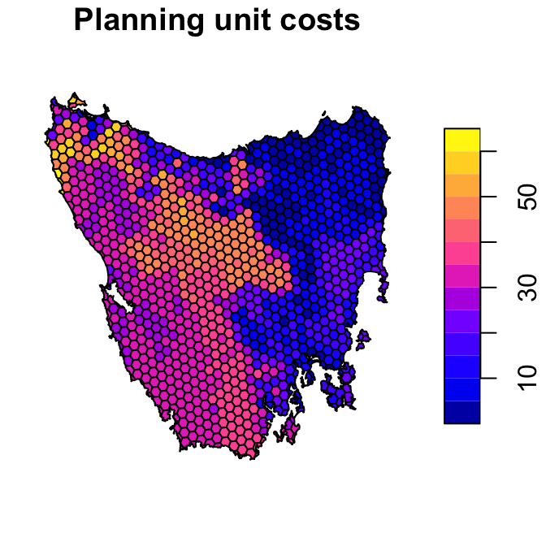
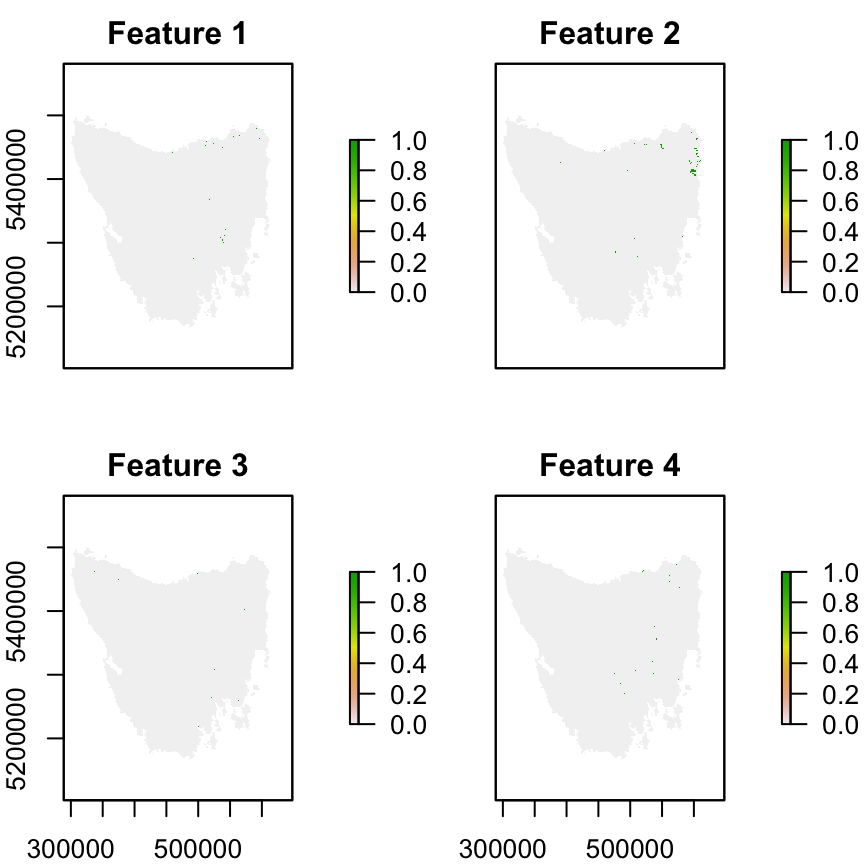
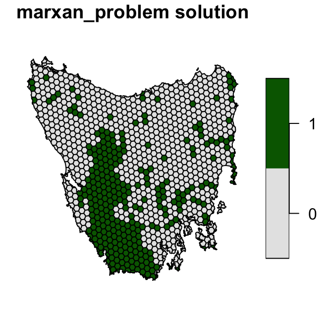
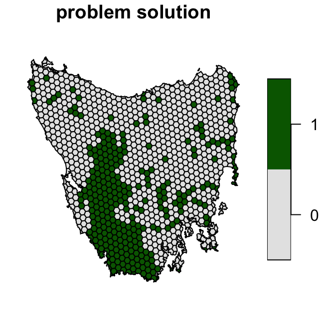
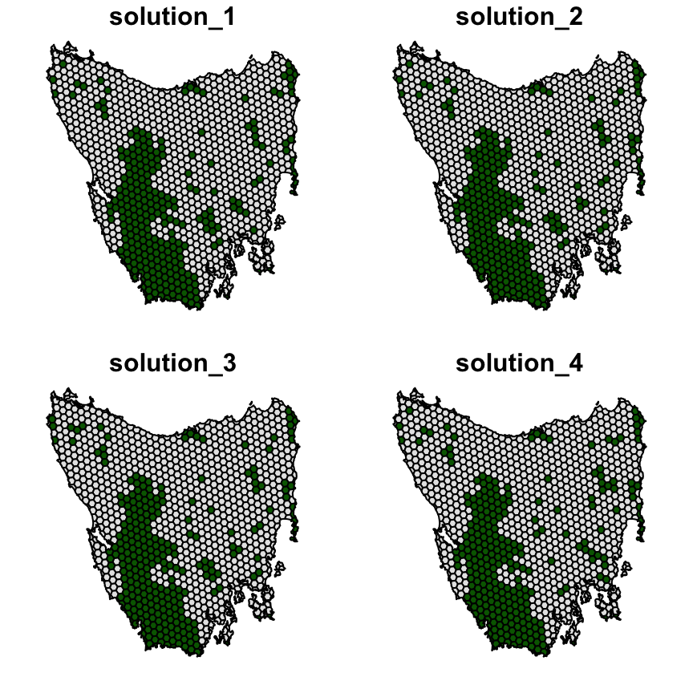
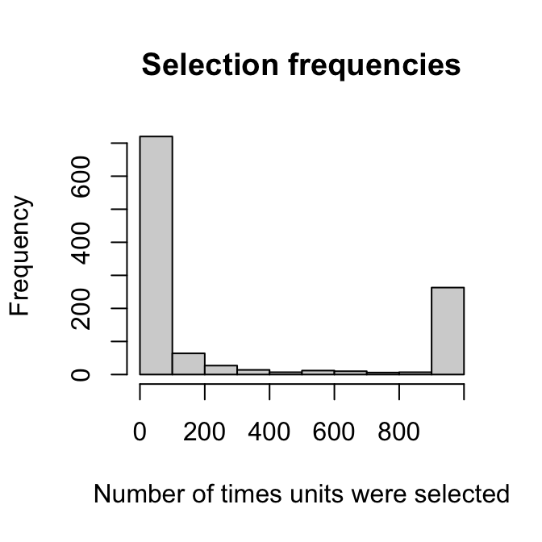
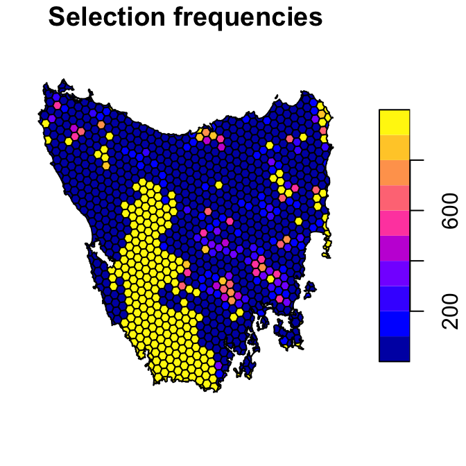

Chapter 5 Tasmania Tutorial
The aim of this tutorial is to provide a worked example of how vector-based data can be used to develop conservation prioritizations using the prioritizr R package. It is also written for conservation planners that have used the Marxan decision support tool (Ball et al. 2009) and are interested in applying the prioritizr R package to their own work. The dataset used in this tutorial was obtained from the Introduction to Marxan course. This data was originally a subset of a larger spatial prioritization project performed under contract to Australia’s Department of Environment and Water Resources (Klein et al. 2007).
Please note that this tutorial uses data from the prioritizrdata R, so ensure that it is installed before trying out the code yourself.
5.1 Exploring the data
This dataset contains two items. First, a spatial planning unit layer that has an attribute table which contains three columns: integer unique identifiers (“id”), unimproved land values (“cost”), and their existing level of protection (“status”). Units with 50 % or more of their area contained in protected areas are associated with a status of 2, otherwise they are associated with a value of 0. If you are familiar with the Marxan decision support tool, then you will notice that these columns are formatted in a similar manner to the input data for Marxan. For Marxan input data, planning units must be described in a table containing one row for each planning unit with a unique identifier and the corresponding cost.
The second item in this dataset is the raster-based feature data. Specifically, the feature data is expressed as a stack of rasters (termed a RasterStack object). Here each layer in the stack represents the distribution of a different vegetation class in Tasmania, Australia. There are 62 vegetation classes in total. For a given layer, pixel values indicate the presence (value of 1) or absence (value of 0) of the vegetation class in an area.
First, load the required packages and the data.
# load packages
library(prioritizrdata)
library(prioritizr)
# load planning unit data
data(tas_pu)
# load conservation feature data
data(tas_features)Now, let’s have a look at the planning unit data.
# print planning unit data
print(tas_pu)## class : SpatialPolygonsDataFrame
## features : 1130
## extent : 298809.6, 613818.8, 5167775, 5502544 (xmin, xmax, ymin, ymax)
## crs : +proj=utm +zone=55 +south +datum=WGS84 +units=m +no_defs +ellps=WGS84 +towgs84=0,0,0
## variables : 5
## names : id, cost, status, locked_in, locked_out
## min values : 1, 0.192488262910798, 0, 0, 0
## max values : 1130, 61.9272727272727, 2, 1, 0# plot map of planning unit costs
plot(st_as_sf(tas_pu[, "cost"]), main = "Planning unit costs")
Next, let examine the feature data. Here we will only plot the first four features as an example. The pixel values denote the presence or absence of each feature within the extent of the study area.
# print planning unit data
print(tas_features)## class : RasterStack
## dimensions : 398, 359, 142882, 62 (nrow, ncol, ncell, nlayers)
## resolution : 1000, 1000 (x, y)
## extent : 288801.7, 647801.7, 5142976, 5540976 (xmin, xmax, ymin, ymax)
## crs : +proj=utm +zone=55 +south +datum=WGS84 +units=m +no_defs +ellps=WGS84 +towgs84=0,0,0
## names : tas_features.1, tas_features.2, tas_features.3, tas_features.4, tas_features.5, tas_features.6, tas_features.7, tas_features.8, tas_features.9, tas_features.10, tas_features.11, tas_features.12, tas_features.13, tas_features.14, tas_features.15, ...
## min values : 0, 0, 0, 0, 0, 0, 0, 0, 0, 0, 0, 0, 0, 0, 0, ...
## max values : 1, 1, 1, 1, 1, 1, 1, 1, 1, 1, 1, 1, 1, 1, 1, ...# plot map of the first four vegetation classes
plot(tas_features[[1:4]], main = paste("Feature", 1:4))
The planning units in this example are a spatial polygon layer—not a raster—and so there can be considerable flexibility in the shape of the planning units. That said, there is a trade-off with the efficiency of data pre-processing in vector-based planning unit data compared to raster-based planning unit data. Vector-based planning unit data generally require more time to complete pre-processing computations (e.g. overlaying the planning unit data with the feature data, or generating boundary data). As a consequence, we generally recommend using raster-based planning unit data where possible to reduce processing time—but note that this is not possible when not all planning units are equal-sized squares. Another strategy is to complete the pre-processing in other software environments (e.g. ArcGIS) and use the pre-processed data directly with the prioritizr package.
5.2 Marxan problem formulation
Here, we will provide an example of using the marxan_problem function to build and solve a typical Marxan conservation planning problem. Then we will show how this same problem can be built and solved using the fully customizable problem function as a comparison.
The dataset used in this example follows many of the conventions used by the Marxan decision support tool. As a consequence, it is not too difficult to format the data for use with the marxan_problem function. The marxan_problem function is essentially a wrapper to the problem function. This means that when we solve problems created using the marxan_problem function, we will solve them using exact algorithms and not the simulated annealing algorithm used by Marxan.
All problem objects formulated with marxan_problem use the minimum set objective. Targets can be either relative or absolute, and planning units can be specified for masking in or out using the locked_in and locked_out arguments. To favor clumped solutions, use the penalty argument to impose a penalty on solutions with high boundary lengths (equivalent to the Boundary Length Modifier (BLM) used in Marxan), and the edge_factor argument to scale the penalty for edges that do not have neighboring planning units, such as the coastline. For simplicity we set all of the targets at the same level, 17 %, to reflect the Aichi biodiversity target to “safeguard” at least 17% of terrestrial ecosystems by 2020. For example, to prioritize planning units in Tasmania that meet the 17 % representation target at the least cost.
First, we will convert the vector-based planning unit data and raster-based feature data into the tabular formats required by the marxan_problem function. These formats are very similar to the formats used by Marxan.
# create table with planning unit data
pu_data <- tas_pu@data
# print first six rows
head(pu_data)## id cost status locked_in locked_out
## 0 1 60.24638 0 FALSE FALSE
## 1 2 19.86301 0 FALSE FALSE
## 2 3 59.68051 0 FALSE FALSE
## 3 4 32.41614 0 FALSE FALSE
## 4 5 26.17706 0 FALSE FALSE
## 5 6 51.26218 0 FALSE FALSE# create table with the feature identifiers, names, and targets
spec_data <- data.frame(id = seq_len(nlayers(tas_features)),
name = paste0("veg", seq_len(nlayers(tas_features))),
prop = 0.17)
# print first six rows
head(spec_data)## id name prop
## 1 1 veg1 0.17
## 2 2 veg2 0.17
## 3 3 veg3 0.17
## 4 4 veg4 0.17
## 5 5 veg5 0.17
## 6 6 veg6 0.17# create table with the planning unit vs. feature data
puvspr_data <- rij_matrix(tas_pu, tas_features)
puvspr_data <- as(puvspr_data, "dgTMatrix")
puvspr_data <- data.frame(pu = puvspr_data@j + 1, species = puvspr_data@i + 1,
amount = puvspr_data@x)
# print first six rows
head(puvspr_data)## pu species amount
## 1 3 54 1.000000e+00
## 2 3 59 1.165971e+01
## 3 5 30 1.000000e+00
## 4 6 27 1.000000e+00
## 5 6 35 1.000000e+00
## 6 6 59 3.635182e-05# create table with the boundary data
bound_data <- boundary_matrix(tas_pu)
bound_data <- as(bound_data, "dgTMatrix")
bound_data <- data.frame(id1 = bound_data@i + 1, id2 = bound_data@j + 1,
boundary = bound_data@x)
# print first six rows
head(bound_data)## id1 id2 boundary
## 1 1 1 6314.6621
## 2 3 1 3922.9264
## 3 6 1 150.3778
## 4 2 2 23958.6982
## 5 4 2 3233.3056
## 6 7 2 4639.9220Now that we have converted the data to tabular format, we can use the marxan_problem function to create a conservation planning problem.
# create problem
p1 <- marxan_problem(pu_data, spec_data, puvspr_data, bound_data,
blm = 0.0005)
# print problem
print(p1)## Conservation Problem
## planning units: data.frame (1130 units)
## cost: min: 0.19249, max: 61.92727
## features: veg1, veg2, veg3, ... (62 features)
## objective: Minimum set objective
## targets: Relative targets [targets (min: 0.17, max: 0.17)]
## decisions: default
## constraints: <Locked in planning units [257 locked units]>
## penalties: <Boundary penalties [edge factor (min: 1, max: 1), penalty (5e-04), zones]>
## portfolio: default
## solver: defaultNext, we can solve the problem (see ?solve for more information). The prioritizr R package supports three different exact algorithm software packages: gurobi, Rsymphony, and lpsymphony. There are costs and benefits associated with each of these different solvers, but each software should return similar results. Note that you will need at least one of these package installed on your system to solve problems. We recommend using the gurobi solver if possible, and have used this solver when building this tutorial. After solving the problem, we will calculate some statistics to describe the solution. Note that the planning unit selections are stored in the “solution_1” column of the solution object.
# solve problem
s1 <- solve(p1)## Gurobi Optimizer version 9.1.1 build v9.1.1rc0 (mac64)
## Thread count: 4 physical cores, 8 logical processors, using up to 1 threads
## Optimize a model with 6358 rows, 4278 columns and 14496 nonzeros
## Model fingerprint: 0xa2fb0a5e
## Variable types: 0 continuous, 4278 integer (4278 binary)
## Coefficient statistics:
## Matrix range [2e-06, 4e+01]
## Objective range [5e-02, 2e+02]
## Bounds range [1e+00, 1e+00]
## RHS range [1e-01, 1e+02]
## Found heuristic solution: objective 30263.129158
## Found heuristic solution: objective 12512.071934
## Presolve removed 1793 rows and 1168 columns
## Presolve time: 0.03s
## Presolved: 4565 rows, 3110 columns, 10169 nonzeros
## Found heuristic solution: objective 11803.383927
## Variable types: 0 continuous, 3110 integer (3110 binary)
## Presolved: 4565 rows, 3110 columns, 10169 nonzeros
##
##
## Root relaxation: objective 1.076817e+04, 808 iterations, 0.04 seconds
##
## Nodes | Current Node | Objective Bounds | Work
## Expl Unexpl | Obj Depth IntInf | Incumbent BestBd Gap | It/Node Time
##
## 0 0 10768.1736 0 137 11803.3839 10768.1736 8.77% - 0s
##
## Explored 0 nodes (808 simplex iterations) in 0.10 seconds
## Thread count was 1 (of 8 available processors)
##
## Solution count 3: 11803.4 12512.1 30263.1
##
## Optimal solution found (tolerance 1.00e-01)
## Best objective 1.180338392702e+04, best bound 1.076817364956e+04, gap 8.7705%# print first six rows of solution object
head(s1)## id cost status locked_in locked_out solution_1
## 0 1 60.24638 0 FALSE FALSE 0
## 1 2 19.86301 0 FALSE FALSE 0
## 2 3 59.68051 0 FALSE FALSE 0
## 3 4 32.41614 0 FALSE FALSE 0
## 4 5 26.17706 0 FALSE FALSE 0
## 5 6 51.26218 0 FALSE FALSE 0# count number of planning units in solution
sum(s1$solution_1)## [1] 326# proportion of planning units in solution
mean(s1$solution_1)## [1] 0.2884956# calculate feature representation
r1 <- eval_feature_representation_summary(p1, s1[, "solution_1", drop = FALSE])
print(r1)## # A tibble: 62 x 5
## summary feature total_amount absolute_held relative_held
## <chr> <chr> <dbl> <dbl> <dbl>
## 1 overall veg1 33.9 5.97 0.176
## 2 overall veg2 170. 40.7 0.239
## 3 overall veg3 24.0 6.00 0.250
## 4 overall veg4 32.8 10.4 0.317
## 5 overall veg5 24.8 4.51 0.182
## 6 overall veg6 22.0 4.00 0.182
## 7 overall veg7 16.4 3.06 0.187
## 8 overall veg8 43.0 9.12 0.212
## 9 overall veg9 388. 95.3 0.245
## 10 overall veg10 14.5 5.91 0.407
## # … with 52 more rows# visualize the solution by converting the solution to a spatial object
s1 <- SpatialPolygonsDataFrame(as(tas_pu, "SpatialPolygons"), data = s1)
s1$solution_1 <- factor(s1$solution_1)
plot(st_as_sf(s1[, "solution_1"]), pal = c("grey90", "darkgreen"),
main = "marxan_problem solution")
5.3 General problem formulation
Now we will formulate the exact same problem using the problem function and the spatially referenced data. We recommend using this approach instead of the marxan_problem because it is more verbose and you can specify exactly how the conservation planning problem should be formulated.
# build problem
p2 <- problem(tas_pu, tas_features, cost_column = "cost") %>%
add_min_set_objective() %>%
add_relative_targets(0.17) %>%
add_locked_in_constraints("locked_in") %>%
add_binary_decisions() %>%
add_boundary_penalties(penalty = 0.0005, edge_factor = 1)
# print the problem
print(p2)## Conservation Problem
## planning units: SpatialPolygonsDataFrame (1130 units)
## cost: min: 0.19249, max: 61.92727
## features: tas_features.1, tas_features.2, tas_features.3, ... (62 features)
## objective: Minimum set objective
## targets: Relative targets [targets (min: 0.17, max: 0.17)]
## decisions: Binary decision
## constraints: <Locked in planning units [257 locked units]>
## penalties: <Boundary penalties [edge factor (min: 1, max: 1), penalty (5e-04), zones]>
## portfolio: default
## solver: default# solve problem
s2 <- solve(p2)## Gurobi Optimizer version 9.1.1 build v9.1.1rc0 (mac64)
## Thread count: 4 physical cores, 8 logical processors, using up to 1 threads
## Optimize a model with 6358 rows, 4278 columns and 14496 nonzeros
## Model fingerprint: 0xa2fb0a5e
## Variable types: 0 continuous, 4278 integer (4278 binary)
## Coefficient statistics:
## Matrix range [2e-06, 4e+01]
## Objective range [5e-02, 2e+02]
## Bounds range [1e+00, 1e+00]
## RHS range [1e-01, 1e+02]
## Found heuristic solution: objective 30263.129158
## Found heuristic solution: objective 12512.071934
## Presolve removed 1793 rows and 1168 columns
## Presolve time: 0.03s
## Presolved: 4565 rows, 3110 columns, 10169 nonzeros
## Found heuristic solution: objective 11803.383927
## Variable types: 0 continuous, 3110 integer (3110 binary)
## Presolved: 4565 rows, 3110 columns, 10169 nonzeros
##
##
## Root relaxation: objective 1.076817e+04, 808 iterations, 0.04 seconds
##
## Nodes | Current Node | Objective Bounds | Work
## Expl Unexpl | Obj Depth IntInf | Incumbent BestBd Gap | It/Node Time
##
## 0 0 10768.1736 0 137 11803.3839 10768.1736 8.77% - 0s
##
## Explored 0 nodes (808 simplex iterations) in 0.09 seconds
## Thread count was 1 (of 8 available processors)
##
## Solution count 3: 11803.4 12512.1 30263.1
##
## Optimal solution found (tolerance 1.00e-01)
## Best objective 1.180338392702e+04, best bound 1.076817364956e+04, gap 8.7705%# calculate feature representation
r2 <- eval_feature_representation_summary(p2, s2[, "solution_1"])
print(r2)## # A tibble: 62 x 5
## summary feature total_amount absolute_held relative_held
## <chr> <chr> <dbl> <dbl> <dbl>
## 1 overall tas_features.1 33.9 5.97 0.176
## 2 overall tas_features.2 170. 40.7 0.239
## 3 overall tas_features.3 24.0 6.00 0.250
## 4 overall tas_features.4 32.8 10.4 0.317
## 5 overall tas_features.5 24.8 4.51 0.182
## 6 overall tas_features.6 22.0 4.00 0.182
## 7 overall tas_features.7 16.4 3.06 0.187
## 8 overall tas_features.8 43.0 9.12 0.212
## 9 overall tas_features.9 388. 95.3 0.245
## 10 overall tas_features.10 14.5 5.91 0.407
## # … with 52 more rows# visualize solution
s2$solution_1 <- factor(s2$solution_1)
plot(st_as_sf(s2[, "solution_1"]), pal = c("grey90", "darkgreen"),
main = "problem solution")
5.4 Selection frequencies
Similar to the Marxan decision support tool, we can generate a portfolio of solutions and compute the planning unit selection frequencies to understand their relative importance. This can be useful when trying to understand which planning units in the solution are the most irreplaceable. To do this, we will create a portfolio containing 1000 solutions within 20% of optimality, and calculate the number of times that each planning unit was selected. Note that this requires the Gurobi software to be installed.
# create new problem with a portfolio added to it
p3 <- p2 %>%
add_gap_portfolio(number_solutions = 1000, pool_gap = 0.2)
# print problem
print(p3)## Conservation Problem
## planning units: SpatialPolygonsDataFrame (1130 units)
## cost: min: 0.19249, max: 61.92727
## features: tas_features.1, tas_features.2, tas_features.3, ... (62 features)
## objective: Minimum set objective
## targets: Relative targets [targets (min: 0.17, max: 0.17)]
## decisions: Binary decision
## constraints: <Locked in planning units [257 locked units]>
## penalties: <Boundary penalties [edge factor (min: 1, max: 1), penalty (5e-04), zones]>
## portfolio: Gap portfolio [number_solutions (1000), pool_gap (0.2)]
## solver: default# generate solutions
s3 <- solve(p3)
# find column numbers with the solutions
solution_columns <- which(grepl("solution", names(s3)))
# calculate selection frequencies
s3$selection_frequencies <- rowSums(as.matrix(s3@data[, solution_columns]))# plot first four solutions in the portfolio
s3$solution_1 <- factor(s3$solution_1)
s3$solution_2 <- factor(s3$solution_2)
s3$solution_3 <- factor(s3$solution_3)
s3$solution_4 <- factor(s3$solution_4)
plot(st_as_sf(s3[, c("solution_1", "solution_2", "solution_3", "solution_4")]),
pal = c("grey90", "darkgreen"))
# plot histogram of selection frequencies
hist(s3$selection_frequencies, main = "Selection frequencies",
xlab = "Number of times units were selected")
# plot spatial distribution of the selection frequencies
plot(st_as_sf(s3[, "selection_frequencies"]), main = "Selection frequencies")